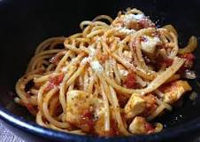

Chicken Spaghetti Recipe

Ingredients
- 1 whole raw chicken, cut into 8 pieces
- 1 pound thin spaghetti, broken into 2-inch pieces
- 2 1/2 cups shredded sharp Cheddar
- 1/4 cup finely diced green bell pepper
- 1/4 cup finely diced red bell pepper
- 1 teaspoon seasoned salt
- 1/8 to 1/4 teaspoon cayenne pepper
- Two 10 3/4-ounce cans cream of mushroom soup
- 1 medium onion, finely diced
- Salt and freshly ground black pepper
Directions
Watch how to make this recipe
- Preheat the oven to 350degrees F.
- Bring a large pot of water to a boil. Add the
chicken pieces to the boiling water and boil for a few
minutes, and then turn the heat to medium-low and simmer,
30 to 45 minutes.
- Remove the chicken and 2 cups of the chicken cooking
broth from the pot. When the chicken is cool, remove the skin
and pick out the meat (a mix of dark and white) to make 2 generous
cups. Discard the bones and skin.
- Cook the spaghetti in the chicken cooking broth until al dente.
Do not overcook. When the spaghetti is cooked, combine with the chicken,
1 1/2 cups of the cheese, the green peppers, red peppers, seasoned salt,
cayenne, soup and onions, and sprinkle with salt and pepper. Stir in 1 cup
of the reserved chicken cooking broth, adding an additional cup if needed.
- Place the mixture in a 9- by 13-inch casserole pan and top with the
remaining 1 cup cheese. Bake immediately until bubbly, about 45 minutes.
(If the cheese on top starts to get too dark, cover with foil.)
Best restaurant in NY that make this recipe